Genuine rendered screenshots captured from the API 35 disposable emulator emulator-5554. The 1600×2560 and 2560×1600 displays are emulator viewport overrides, not physical tablet tests.
Habitat chooser
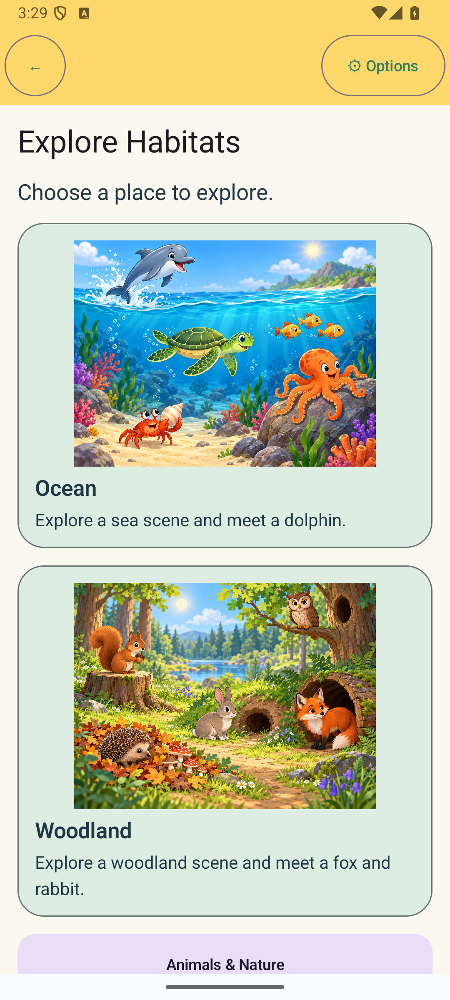
Chooser · English · both habitatsPhone portrait · 1080×2400 px · 1×. Both active choices are visible in the scrollable chooser; the category return is below the fold.Options return · German · selected Rabbit retainedPhone portrait · 1080×2400 px · 1×. The active animal and its fact remain selected after returning from Options.
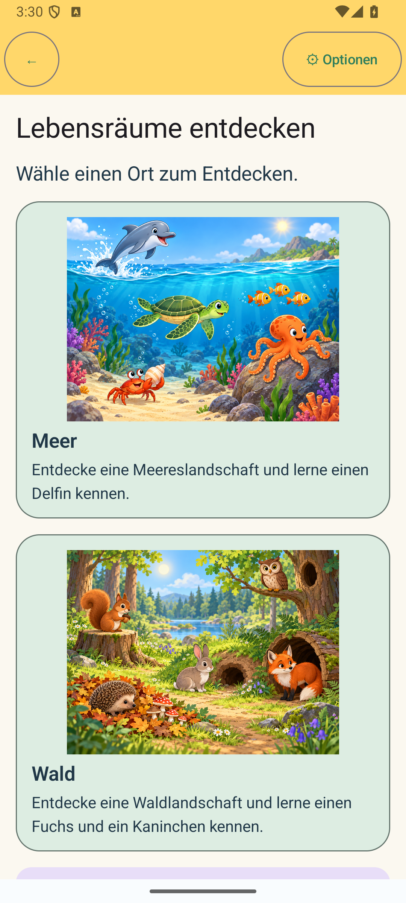
Back to chooser · GermanPhone portrait · 1080×2400 px · 1×. German habitat titles and descriptions wrap without clipping.
Woodland Explore
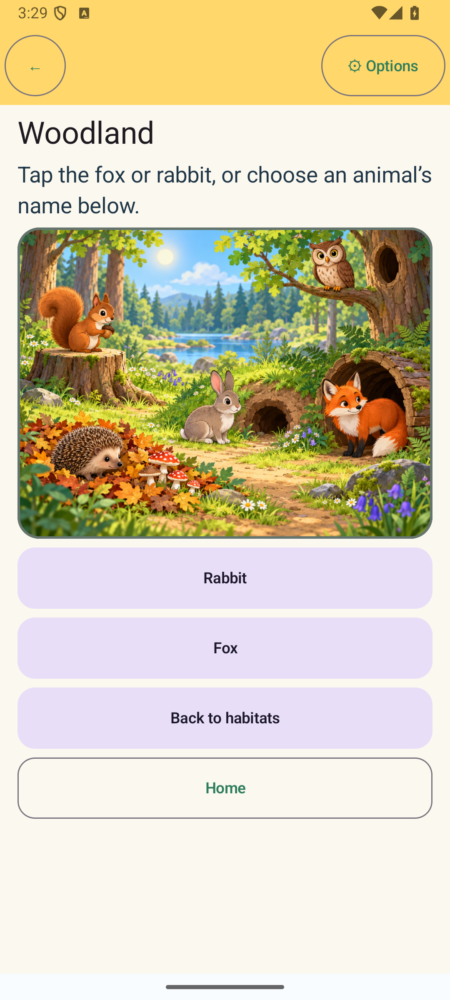
Initial scene · English · no selectionPhone portrait · 1080×2400 px · 1×. Instructions appear before the scene and named alternatives.
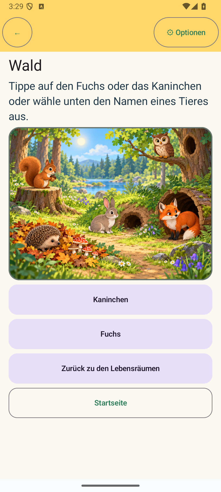
Initial scene · German · no selectionPhone portrait · 1080×2400 px · 1×. German prompt and animal names remain readable; entering the scene does not narrate automatically.Rabbit selected · English · switched from FoxPhone portrait · 1080×2400 px · 1×. A dark outline identifies the selected image region; the Rabbit fact replaces the Fox fact.
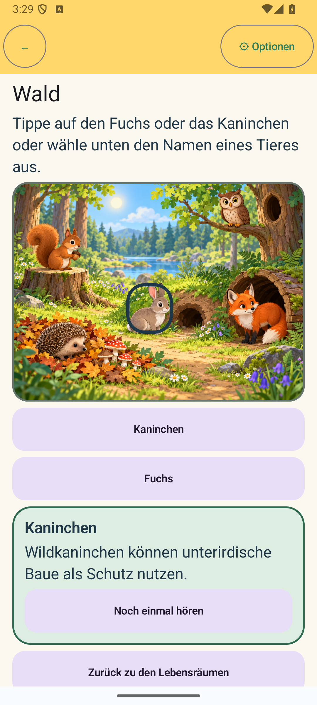
Rabbit selected · GermanPhone portrait · 1080×2400 px · 1×. The selection outline is non-colour-only and the reviewed German shelter fact is shown.
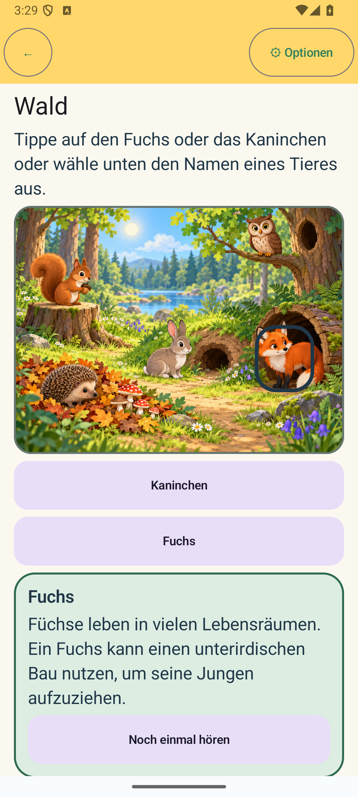
Fox selected · German · switched from RabbitPhone portrait · 1080×2400 px · 1×. Selection and fact both move to Fox; Replay speaks the current selection.
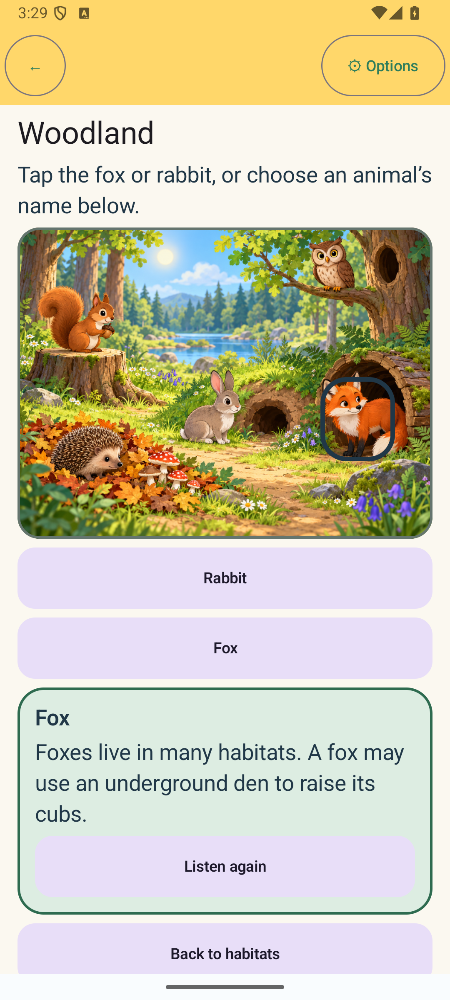
Options language return · English · Fox retainedPhone portrait · 1080×2400 px · 1×. Language changes preserve the canonical selected-animal ID and update the displayed fact.
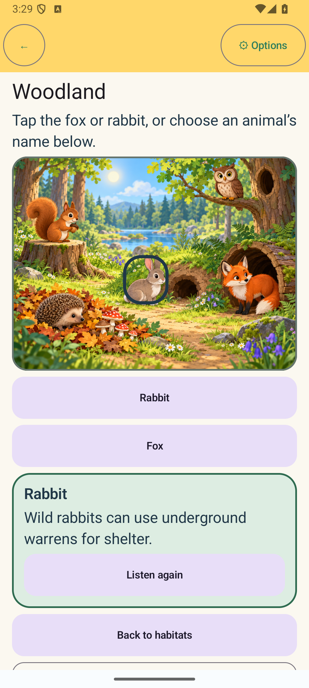
Selection restored · English · Rabbit after Activity recreationPhone portrait · 1080×2400 px · 1×. Activity recreation retains the current animal and fact; this is not an OS process-death test.
Responsive layouts and text scale
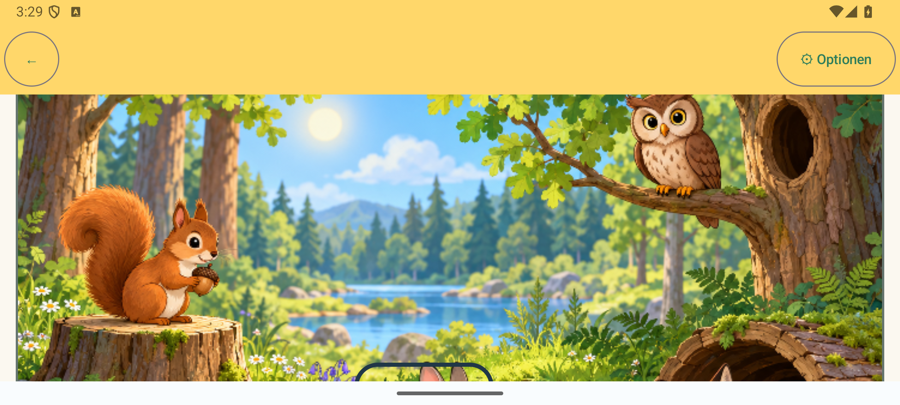
Phone landscape · German · scrolled scene view2400×1080 px · 1×. The capture is scrolled to the illustration, so title and prompt are above the viewport; controls remain reachable by scrolling.
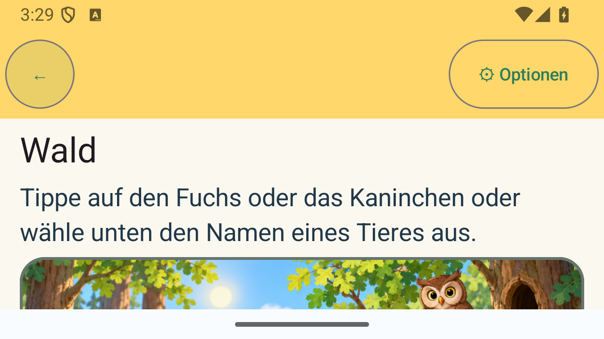
Short landscape · German1280×720 px · 1×. Task instruction is visible in the first viewport; scene and lower controls are reachable by scrolling.
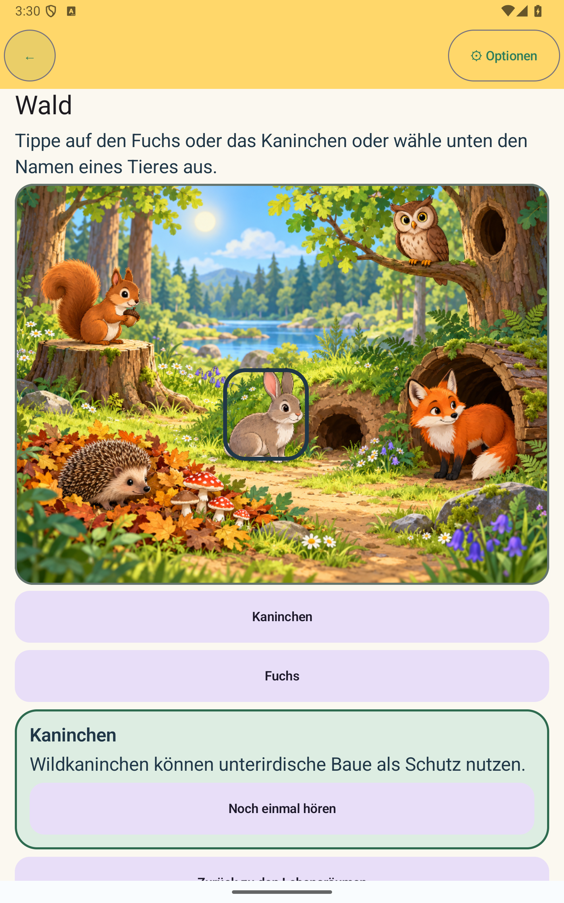
Tablet-size portrait emulator viewport · German1600×2560 px · 1×. Scene, choice controls, selected fact and Replay use a single scroll column.
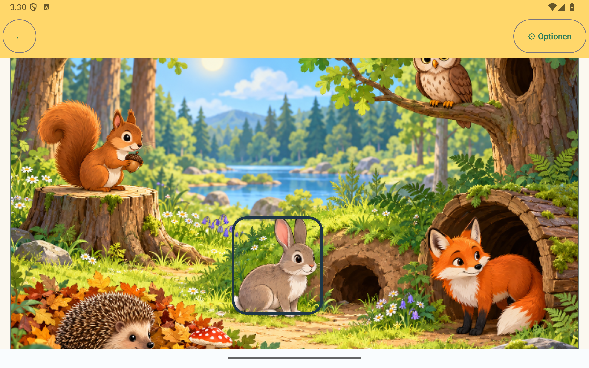
Tablet-size landscape emulator viewport · German · scrolled scene view2560×1600 px · 1×. Large scene targets remain aligned to the source image; the page scrolls to the lower controls.
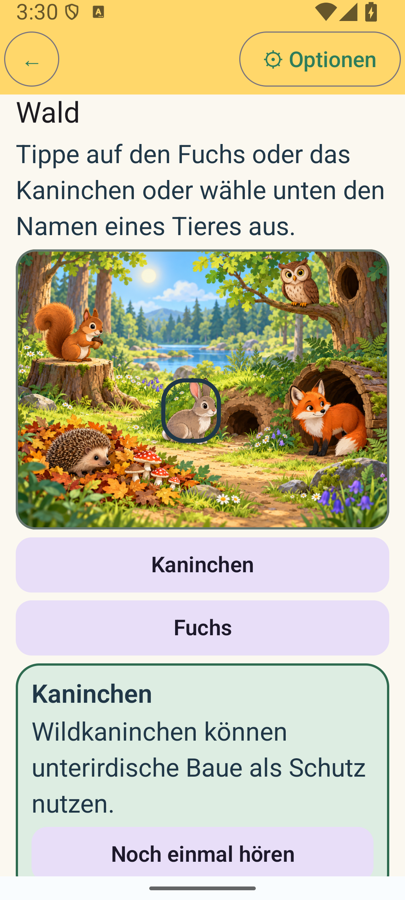
Selected Rabbit · German · 1.5× textPhone portrait · 1080×2400 px · 1.5×. Prompt, scene and alternatives remain legible; the fact/replay card is below the fold.
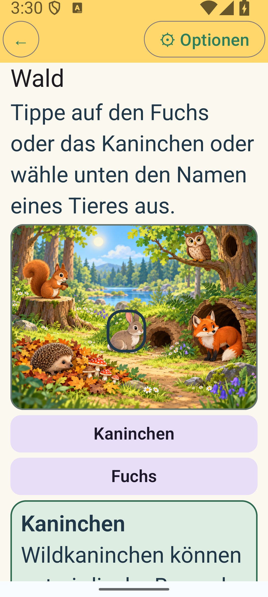
Selected Rabbit · German · 2× textPhone portrait · 1080×2400 px · 2×. The test scrolls to the title before capture; text is large and the selected fact/replay can be reached by scrolling.
Hotspot refinement — before and after
The original wide bounds included nearby mushrooms, den and ground. The final image-relative bounds are narrower and recentered on Rabbit and Fox. Both captures are genuine emulator output at 1080×2400 px.
Before · Rabbit selected · GermanPhone portrait · 1080×2400 px · 1×. The original wide outline extends into nearby mushrooms and ground.After · Rabbit selected · GermanPhone portrait · 1080×2400 px · 1×. The narrower outline follows Rabbit more closely; mushrooms are outside the target.
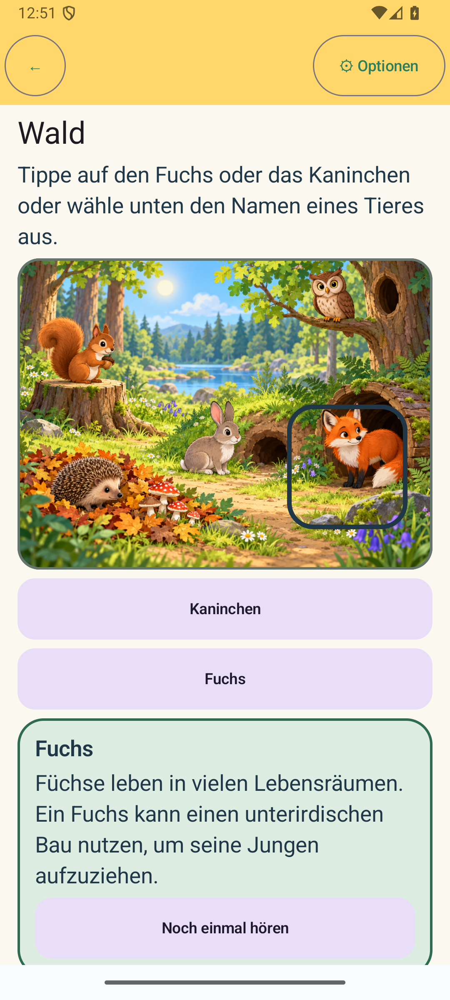
Before · Fox selected · GermanPhone portrait · 1080×2400 px · 1×. The original wide outline included much of the den and surrounding ground.After · Fox selected · GermanPhone portrait · 1080×2400 px · 1×. The final outline frames the main Fox body; a small tail tip remains outside.